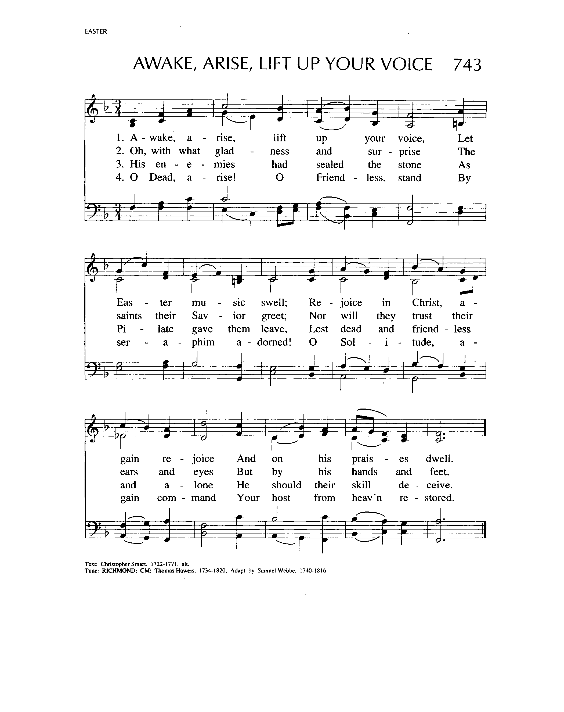
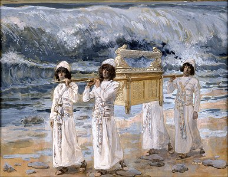

|
|
|
|
1 Let saints on earth in concert sing 2 One family, we dwell in him, 3 One army of the living God, 4 E'en now to their eternal home 5 Jesu, be thou our constant guide;
|
384永�畬a庭
1.完工众圣，尘世信徒，上下同声歌唱，
因为大家是主仆人，天上人间一样。 2.全属一家，居住主中，教会不分上下， 虽有寒流暂隔其间，小小寒流不怕。 3.全属永生，上主之军，大家听他命令， 一部军队已过河流，一部将到河滨。 4.前驱后进，千万众灵，正归永�畬a庭， 或者已到天家门口，静待招呼声音。 5.求主常在，途中领导，发出威严命令， 吩咐约旦小河分开，将我带到天庭。 |
|
https://www.mred365.cn/szxg/7387.html
 |
|
|
|
|

Let Saints on Earth in Concert Sing (Dundee) https://youtu.be/6gYYdlI17uA
LX1902
Let Saints On Earth In
Concert Sing
384永�畬a庭
| Text: | Let Saints on Earth in Concert Sing |
| Author: | Charles Wesley, 1707-1788 |

Tune Information
| Title: | RICHMOND (Haweis) |
| Composer: | Thomas Haweis (1792) |
| Meter: | 8.6.8.6 |
| Incipit: | 51354 34213 2517 |
| Key: | G Major |
| Copyright: | Public Domain |
| Short Name: | Thomas Haweis |
| Full Name: | Haweis, Thomas, 1734-1820 |
| Birth Year: | 1734 |
| Death Year: | 1820 |
Thomas Haweis (b. Redruth, Cornwall, England, 1734; d. Bath, England, 1820)
Initially apprenticed to a surgeon and pharmacist, Haweis decided to study for the ministry at Oxford and was ordained in the Church of England in 1757. He served as curate of St. Mary Magdalen Church, Oxford, but was removed by the bishop from that position because of his Methodist leanings. He also was an assistant to Martin Madan at Locke Hospital, London. In 1764 he became rector of All Saints Church in Aldwinkle, Northamptonshire, and later served as administrator at Trevecca College, Wales, a school founded by the Countess of Huntingdon, whom Haweis served as chaplain. After completing advanced studies at Cambridge, he published a Bible commentary and a volume on church history. Haweis was strongly interested in missions and helped to found the London Mission Society. His hymn texts and tunes were published in Carmino Christo, or Hymns to the Savior (1792, expanded 1808).
Bert Polman
Notes
RICHMOND (also known as CHESTERFIELD) is a florid tune originally written by Thomas Haweis (PHH 270) and published in his collection Carmina Christo (1792). Samuel Webbe, Jr., adapted and shortened the tune and published it in his Collection of Psalm Tunes (1808). It was reprinted in 1853 in Webbe's Psalmody. Webbe named the tune after Rev. Leigh Richmond, a friend of Haweis's. The CHESTERFIELD name comes from Lord Chesterfield, a statesman who frequently visited Selina Hastings, Countess of Huntingdon, for whom Haweis worked as a chaplain.
At its opening the tune has a "rocket" motif radiating a sense of confidence. With its various revisions the melody has lost its original florid character, but the harmonization (from Hymns Ancient and Modern Revised, 1950) provides strength and vigor, and the descant by Craig S. Lang (PHH 253) introduces another florid line for festive singing of stanza 4.
Sing stanza 1 in unison and stanzas 2 and 3 with jubilant accompaniment. Because stanza 4 is the only one directed to Christ, it should receive a different musical treat¬ment than the other stanzas. Strong unison singing, a full accompaniment, and the use of the vocal or instrumental descant will help the "glad hosannas. . . ring."
Like his father Samuel, Sr. (PHH 112), Samuel Webbe, Jr. (b. London, 1770; d. London, 1843), was very active in both sacred and secular music. Together they published A Collection of Motets and Antiphons (1792). He was active as organist in Liverpool and London at both Unitarian and Roman Catholic churches.
--Psalter Hymnal Handbook, 1988

James J. Tissot
1836–1902